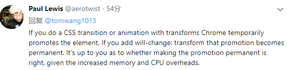
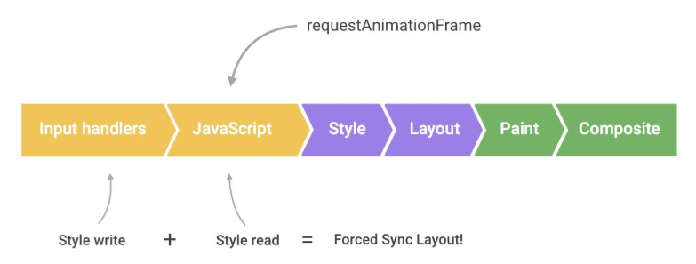

[TOC]
这篇文章的主要素材来源于google开发文档：https://developers.google.com/web/fundamentals/performance/rendering/，算是做一个总结再加上自己的一些理解，做一个备忘录
概述
显示器是以一个固定速度刷新屏幕的，一般是每秒60帧，我们可以想象浏览器里面有一个保存当前浏览器内容的渲染缓存，有一个独立的线程每隔大约16.6ms从这个缓存中把浏览器内容刷新到屏幕上，而浏览器的渲染便是刷新这个缓存。
浏览器绘制一帧主要需要经过下面5步：

javascript
在javascript中可以做一些引起视觉变化的动作，如修改样式、操作dom等
style
这一步主要是根据选择器重新计算元素的最终的css样式，看哪些元素的样式发生了变化
layout
这个阶段计算元素几何布局的变化，如位置、大小等。值的注意的是，一个元素layout的变化可能会导致其他元素的连锁变化
paint
这一步就是绘制了：根据元素的位置、大小、样式进行绘制。一般来说，浏览器是分层(layer)绘制的，不同的元素可能被绘制到不同的层上
composite
这一步把绘制好的层根据层级关系(如z-index)组装起来
不是每次重绘(update rendering)都会经过这完整的5步，这又分三种情况：
修改layout相关属性，如width，这种情况下需要经过完整的步骤
修改的属性和layout无关，如边框颜色，这种情况下不需要重新计算layout，只需要重绘
有些属性的修改甚至都不需要重绘，直接组装即可
所以做视觉变化时我们应该优先使用这种属性
下面我们依次分析每一步在性能优化时该注意哪些东西
优化javascript的执行
避免js执行时间太长
提到js渲染优化，大家都知道一点，就是不要让js执行时间过长以免卡住主线程使得页面不能及时渲染更新，因为上面说的那几步都是在主线程中进行的。这个问题除了优化自身代码外有2种解决办法：
web worker
比如你要做一个很费时的排序，可以扔给web worker去做，排好序了再返回：
1
2
3
4
5
6
7
8
9var dataSortWorker = new Worker("sort-worker.js");
dataSortWorker.postMesssage(dataToSort);
// The main thread is now free to continue working on other things...
dataSortWorker.addEventListener('message', function(evt) {
var sortedData = evt.data;
// Update data on screen...
});任务分解
如果你的任务实在是要在主线程中做(如需要操作dom)，那么可以把任务分解成很多小步，把每一小步放到
requestAnimationRequest(简称raf，后面会讲到)中进行，这样就不会阻塞页面的响应与渲染，示例如下：1
2
3
4
5
6
7
8
9
10
11
12
13
14
15
16
17
18
19
20var taskList = breakBigTaskIntoMicroTasks(monsterTaskList);
requestAnimationFrame(processTaskList);
function processTaskList(taskStartTime) {
var taskFinishTime;
do {
// Assume the next task is pushed onto a stack.
var nextTask = taskList.pop();
// Process nextTask.
processTask(nextTask);
// Go again if there’s enough time to do the next task.
taskFinishTime = window.performance.now();
} while (taskFinishTime - taskStartTime < 3);
if (taskList.length > 0)
requestAnimationFrame(processTaskList);
}
用requestAnimationRequest来做视觉变化
前面提到了raf，这里我们正式介绍一下。简单地说，raf中注册的callback会在每一帧绘制开始的时候被调用。这里的每一帧开始可以理解为我们刚开始提到的屏幕以60帧每秒刷新的每一帧的开始，也是上一帧的结束点。就是说，从这个开始点开始，过大约16.6ms，屏幕会再次刷新。所以，你在raf中做的视觉变化(如样式修改，dom操作等)会在下一帧中得到展示(当然这些变化需要在16.6ms之内被浏览器更新)。
在raf出来之前，我们做视觉修改的时机和屏幕刷新时机是完全独立的，这会导致丢帧的情况，就是我我们的修改不会在下一帧显示出来，而是下下帧才显示出来，比如你用setTimeout在某个时间点做了修改，可能就会出现这种情形：

如果我们能把js中的视觉修改提前到当前帧的开始处，那就能在下一帧得到展示，而唯一能达到这个目的的做法就是使用raf
减少样式计算的作用范围及复杂性
这一节没啥好说的，一是使用简单的选择器，尽量使用class：
1 | // bad |
二是尽量减少需要重新计算样式的元素数量
避免复杂的布局计算以及布局的反复计算(下面简称布局抖动)
尽量避免修改元素的布局
布局计算是重新计算元素的位置及大小，由于元素之间的排版关系紧密，布局计算的范围通常是整个文档：如果文档中的元素很多，这个过程需要花很长时间，所以第一原则是尽量避免修改元素的布局
避免强制布局同步(forced synchronous layouts)
前面提到，一般而言，我们渲染一帧需要经过以下5步：
layout只会计算一次，但是如果我们不注意的话，可能在javascript中就会发生layout计算，这种情况叫强制布局计算，也就是通常所说的回流。
关于布局，我们首先要认识的一件事就是在javascript中可以毫无代价地得到前一帧的布局信息，问题在于，如果你在获取之前改变了元素的样式，这个时候浏览器为了得到元素的最新的布局信息，必须先进行布局计算：
1
2
3
4
5
6
7
8function logBoxHeight() {
// 改变元素样式
box.classList.add('super-big');
// Gets the height of the box in pixels
// and logs it out - 回流产生
console.log(box.offsetHeight);
}避免布局抖动(layout thrashing)
比回流更可怕的是反复回流，看下以下代码：
1
2
3
4
5
6function resizeAllParagraphsToMatchBlockWidth() {
// Puts the browser into a read-write-read-write cycle.
for (var i = 0; i < paragraphs.length; i++) {
paragraphs[i].style.width = box.offsetWidth + 'px';
}
}每次循环中需要得到box的宽度，同时设置其他元素的宽度；在下一次循环时，由于有元素的样式发生了变化，所以为了得到box的新的宽度必须重新计算布局，导致每次循环都要进行回流，这对性能是影响很大的
简化绘制复杂性及减小绘制区域
绘制一般是整个流程中最费时的一步，且除了transform和opacity属性外(下节会详细讲)，其他css属性的修改都会引起重绘。在重绘不可避免的情况下，可以考虑以下方法来减轻重绘的代价：
将重绘的元素提升到新的层
前面提到过，浏览器是按层绘制的，绘制好所有层之后再把它们叠加合成生成最终的渲染结果。将重绘的元素提升到单独的层，这样就不会影响其他元素，提高渲染效率，这对那种移动的元素尤其有效。提升到独立的层的最有效的办法是使用
will-change属性：1
2
3.moving-element {
will-change: transform;
}如果浏览器不支持这个属性，可以使用下面的规则：
1
2
3.moving-element {
transform: translateZ(0);
}当然，太多的层也不好，加了之后需要处理验证
减小绘制区域
减小绘制复杂性
不用的css样式效果绘制效率不一样，比如说阴影绘制就比背景耗时，在效果相差不大时尽量考虑使用简单的css样式
坚持使用只影响合成的css属性(下面简称”合成相关”)及合理使用渲染层
上一节提过，有两个属性的修改不会引起重绘，这2个属性就是 transform 和 opacity：

所以在做动画时使用这2个属性是效率最高的：浏览器会把元素临时提升到独立层，不用绘制，直接合成。注意：如果需要将元素永久性地提升到独立层，需要使用上面提到的will-change或transform属性：

考虑在事件处理中使用防节流机制
避免在事件处理中改变样式
事件处理是在
raf之前执行的，如果你在事件处理中修改了样式，然后在raf中读取了样式，就可能导致前面提到的回流：
所以始终应该在raf中修改样式
事件节流
想scroll，size这种事件触发频率远远大于屏幕刷新频率的，在这种事件处理中做一些视觉变化操作是很浪费资源的，并可能导致界面卡死，解决办法还是一样：使用raf：
1
2
3
4
5
6
7
8
9
10
11
12
13function onScroll (evt) {
// Store the scroll value for laterz.
lastScrollY = window.scrollY;
// Prevent multiple rAF callbacks.
if (scheduledAnimationFrame)
return;
scheduledAnimationFrame = true;
requestAnimationFrame(readAndUpdatePage);
}
window.addEventListener('scroll', onScroll);